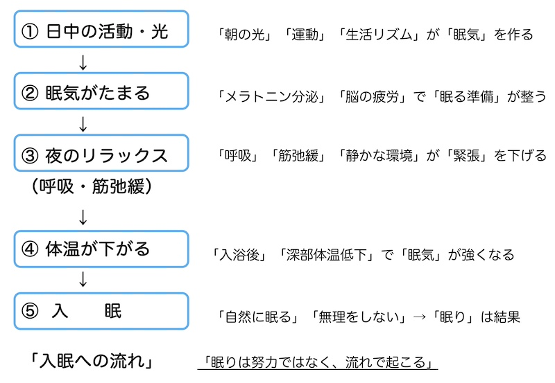

公開日：2026年4月｜最終更新：2026年6月
第１章 入眠とは何か
入眠とは、「眠ろうとすること」ではなく、体と脳が眠れる状態に変わることです。
- 脳の興奮が下がる
- 体の緊張がゆるむ
- 体温がゆっくり下がる
- 副交感神経が優位になる
ポイント：
「眠ろう」と頑張るほど、眠れなくなることがあります。
大切なのは、眠りを引き寄せる状態を作ることです。
第２章 入眠メソードの基本
(1) Method 1 呼吸を整える（基本）
呼吸をゆっくりにすることで、体は自然にリラックスします。
やり方：
- 鼻からゆっくり4秒吸う
- 口または鼻から6秒かけて吐く
- これを繰り返す
吐く時間を長くするのがコツです。
呼吸に意識を向けることで、余計な考えが減り、眠りに入りやすくなります。
(2) Method 2 筋肉をゆるめる（筋弛緩法）
体の緊張をほぐすことで、入眠がスムーズになります。
やり方：
- 足の指に5秒力を入れる
- スッと力を抜く
- ふくらはぎ → 太もも → 手 → 肩へと進める
「力を抜いた感覚」を味わうことが大切です。
(3) Method 3 考えを手放す（マインドフルネス）
眠れない原因の一つは、「考えすぎ」です。
やり方：
- 呼吸に意識を向ける
- 考えが浮かんだら「考えている」と気づく
- 無理に止めず、呼吸に戻る
「考えを消す」のではなく、「流す」イメージです。
第３章 高齢者に特に大切なポイント
(1) 眠気を作る
入眠がうまくいかない最大の原因は、眠気が足りないことです。
ポイント：
眠気があって初めて、入眠メソードが効果を発揮します。
(2) 無理に眠ろうとしない
「眠らなければ」と思うほど、脳は覚醒します。
考え方のコツ：
- 横になっているだけで休めている
- 眠れなくても問題ない
この考え方が、結果的に眠りを助けます。
(3) 眠れないときは一度離れる
どうしても眠れない場合は、無理に布団にい続けないことも大切です。
- 10〜20分眠れなければ一度起きる
- 暗めの環境で静かに過ごす
- 眠気が来たら戻る
第４章 入眠を助ける環境づくり
- 照明は暖かい色で暗めに
- スマホやテレビは就寝前に控える
- 静かな環境を作る
- 室温は暑すぎず寒すぎず
補足：
強い光や刺激は、脳を目覚めさせてしまいます。
ポイント：「入浴の効果」
入浴は「眠るための準備」です。
お風呂に入ってすぐ寝るより、少し時間をおいた方が自然に眠れます。
入浴は入眠を助ける有効な方法です。
一般的には、入浴後1〜2時間後に就寝するのが理想とされています。
入浴によって一時的に上がった体温が、その後ゆっくり下がることで、
自然な眠気が生じます。
体温が下がるタイミングが、眠りに入りやすい時間帯です。
高齢者では、38〜40℃のぬるめのお湯に10〜15分程度入り、
就寝直前の入浴は避けるようにしましょう。

第５章 入眠を妨げる要因
次のような要因があると、入眠が難しくなります。
- 夜間のトイレ（頻尿）
- 痛み（腰・関節）
- 不安やストレス
- カフェインやアルコール
ポイント：
入眠だけでなく、原因への対策も重要です。
第６章 まとめ
入眠のコツ（まとめ）
- 眠ろうとしない
- 呼吸を整える
- 体の力を抜く
- 考えを手放す
- 日中に眠気を作る
眠りは「努力して得るもの」ではなく、
自然に訪れるものです。
焦らず、静かに、体に任せることが、
最も良い入眠方法です。
「お風呂」→ １〜２時間後 →「就寝」が、ゴールデンパターンです！！
参考文献
- 厚生労働省：健康づくりのための睡眠ガイド2023
- 日本睡眠学会：睡眠障害診療ガイドライン
- 日本老年医学会：高齢者診療ガイドライン
- American Academy of Sleep Medicine: Clinical Practice Guideline for the Treatment of Insomnia
- National Institute on Aging: Sleep and Aging
- Harvard Medical School: Healthy Sleep（Division of Sleep Medicine）
※本ページは公的機関および学会の情報をもとに作成しています。